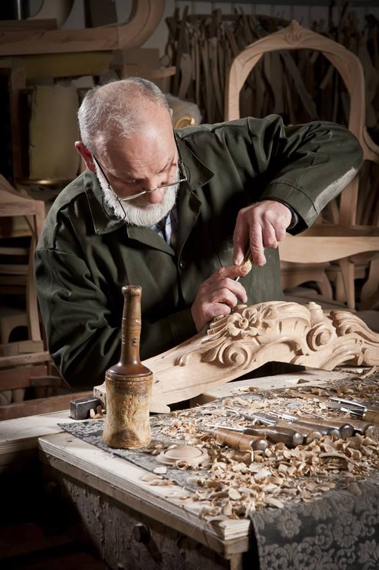

Before you curate your first collection...

We spent a week in a small workshop in the outskirts of Rawalpindi to understand the patience required for true heirloom-quality woodwork.
Get artisan stories and shop updates directly to your inbox